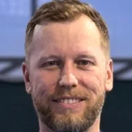
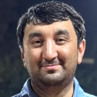
22 ноября · Меридиан · мужская одиночка NTRP 3.8–4.0 · 8 игроков
22-noyabr · Meridian · erkaklar yakkaligi NTRP 3.8–4.0 · 8 o‘yinchi
22 November · Meridian · men’s singles NTRP 3.8–4.0 · 8 players
- 1Фирдавс МухитдиновFirdavs MuxitdinovFirdavs Mukhitdinov
- 2Артём КащейArtyom KashcheyArtyom Kashchey
- 3Тахир Хидоятов · Алишер ХакимовTohir Hidoyatov · Alisher HakimovTahir Khidoyatov · Alisher Khakimov
Финал 6:3. Третье место поделили полуфиналисты. Итоги — по PlayOn.
Final 6:3. Uchinchi o‘rinni yarim finalchilar bo‘lishdi. Natijalar PlayOn bo‘yicha.
Final 6–3. The losing semi-finalists share third place. Results from PlayOn.
Абдукарим МирзаевAbdukarim MirzayevAbdukarim Mirzaev
22 ноября · Олимпийский городок · мужская одиночка NTRP до 3.8 · 24 игрока
22-noyabr · Olimpiya shaharchasi · erkaklar yakkaligi NTRP 3.8 gacha · 24 o‘yinchi
22 November · Olympic Village · men’s singles NTRP up to 3.8 · 24 players
- 1Миррауф АдиловMirrauf AdilovMirrauf Adilov
- 2Джамолиддинхужа АбдужаббаровJamoliddinxo‘ja AbdujabborovJamoliddinkhuja Abdujabbarov
- 3Камиль Мавлютов · Абдулазиз АбдазовKamil Mavlyutov · Abdulaziz AbdazovKamil Mavlyutov · Abdulaziz Abdazov
Финал 6:3, сыграно 46 матчей. Третье место поделили полуфиналисты. Итоги — по PlayOn.
Final 6:3, 46 ta o‘yin o‘tkazildi. Uchinchi o‘rinni yarim finalchilar bo‘lishdi. Natijalar PlayOn bo‘yicha.
Final 6–3, 46 matches played. The losing semi-finalists share third place. Results from PlayOn.
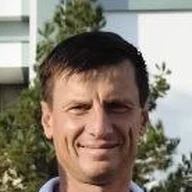
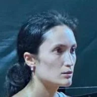
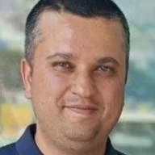
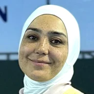
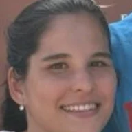
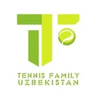
Tennis Family
21 ноября · Олимпийский городок · микст · 15 пар
21-noyabr · Olimpiya shaharchasi · mikst · 15 juft
21 November · Olympic Village · mixed doubles · 15 pairs
Микст Tennis Family «Золотая осень»
Tennis Family «Oltin kuz» miksti
Tennis Family “Golden Autumn” mixed doubles
Masters
Masters
Masters
- 1Петро Захарченко / Ранай УткельбаеваPetro Zaxarchenko / Ranay UtkelbayevaPetro Zakharchenko / Ranai Utkelbaeva
- 2Мурод Ибрагимов / Наргиза ХоджаеваMurod Ibragimov / Nargiza XodjayevaMurod Ibragimov / Nargiza Khodjaeva
- 3Шохрух Ниязов / Малика ОразалиеваShoxrux Niyozov / Malika OrazaliyevaShokhrukh Niyazov / Malika Orazalieva
Futures
Futures
Futures
- 1Александра Ткаченко / Антон ШиркоAleksandra Tkachenko / Anton ShirkoAleksandra Tkachenko / Anton Shirko
- 2Данияр Башаров / Вероника ХушваковаDoniyor Basharov / Veronika XushvakovaDaniyar Basharov / Veronika Khushvakova
Сначала четыре группы, затем две сетки плей-офф. Финал Masters — 6:4, полуфиналы — 7:5 и 6:5, матч за третье место — 6:4 против Зарруха Ниязова и Дины Саидовой. Финал Futures — 6:3. Итоги — по таблицам MatchBall от организатора.
Avval to‘rtta guruh, keyin ikkita pley-off to‘ri. Masters finali — 6:4, yarim finallar — 7:5 va 6:5, uchinchi o‘rin uchun o‘yin — Zarrux Niyozov va Dina Saidovaga qarshi 6:4. Futures finali — 6:3. Natijalar tashkilotchining MatchBall jadvallari bo‘yicha.
Four groups first, then two play-off brackets. Masters final 6–4, semi-finals 7–5 and 6–5, third-place match 6–4 against Zarrukh Niyazov and Dina Saidova. Futures final 6–3. Results from the organiser’s MatchBall tables.
Tennis Family в InstagramTennis Family Instagram’daTennis Family on Instagram
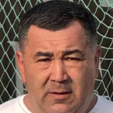
АХ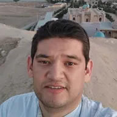
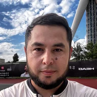
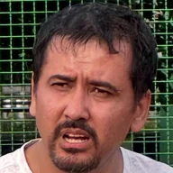
БА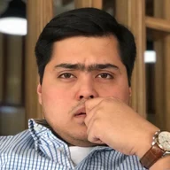
АТ21 ноября · Меридиан · мужские пары NTRP 2.5–4.0 · 12 пар
21-noyabr · Meridian · erkaklar juftligi NTRP 2.5–4.0 · 12 juft
21 November · Meridian · men’s doubles NTRP 2.5–4.0 · 12 pairs
- 1Нематжон Ахмеджанов / Асилхон ХошимовNematjon Axmedjanov / Asilxon XoshimovNematjon Akhmedjanov / Asilkhon Khoshimov
- 2Абдулазиз Каримходжаев / Мухтор МухаммадалиевAbdulaziz Karimxo‘jayev / Muxtor MuhammadaliyevAbdulaziz Karimkhodjaev / Mukhtor Mukhammadaliev
- 3Бахтиёр Маткурбанов / Бобур Азимов · Бонур Латипов / Абдуллох ТошмирзаевBaxtiyor Matqurbonov / Bobur Azimov · Bonur Latipov / Abdulloh ToshmirzayevBakhtiyor Matkurbanov / Bobur Azimov · Bonur Latipov / Abdullokh Toshmirzaev
Финал 6:3. Полуфиналы — 6:3 и 7:6. Третье место поделили две пары. Итоги — по PlayOn.
Final 6:3. Yarim finallar — 6:3 va 7:6. Uchinchi o‘rinni ikki juft bo‘lishdi. Natijalar PlayOn bo‘yicha.
Final 6–3. Semi-finals 6–3 and 7–6. Two pairs shared third place. Results from PlayOn.
ДЧ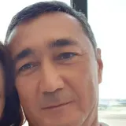
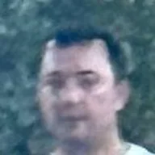
АХАУ 15 ноября · Учкун · мужские пары · 8 пар
15-noyabr · Uchqun · erkaklar juftligi · 8 juft
15 November · Uchqun · men’s doubles · 8 pairs
- 1Имрон Ирматов / Дилмурод ЧориевImron Irmatov / Dilmurod ChoriyevImron Irmatov / Dilmurod Choriev
- 2Баходир Раимов / Рахматжон ЗакировBahodir Raimov / Rahmatjon ZokirovBakhodir Raimov / Rakhmatjon Zakirov
- 3Ильхом Халилжонов / Абдулбосит Халилжонов · Абдукарим Мирзаев / Ахмад УсмоновIlhom Xaliljonov / Abdulbosit Xaliljonov · Abdukarim Mirzayev / Ahmad UsmonovIlkhom Khaliljonov / Abdulbosit Khaliljonov · Abdukarim Mirzaev / Ahmad Usmanov
Финал 6:5 на тай-брейке. Третье место поделили две пары. Итоги — по PlayOn.
Final 6:5, tay-breykda. Uchinchi o‘rinni ikki juft bo‘lishdi. Natijalar PlayOn bo‘yicha.
Final 6–5 on a tie-break. Two pairs shared third place. Results from PlayOn.
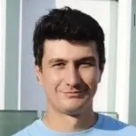
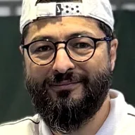
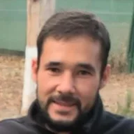
15 ноября · Меридиан · мужская одиночка, Мастерс NTRP 4.5–5.0 · 8 игроков
15-noyabr · Meridian · erkaklar yakkaligi, Masters NTRP 4.5–5.0 · 8 o‘yinchi
15 November · Meridian · men’s singles, Masters NTRP 4.5–5.0 · 8 players
- 1Нодирбек КорчиевNodirbek KorchiyevNodirbek Korchiev
- 2Джахонгир ШириновJahongir ShirinovJakhongir Shirinov
- 3Алишер АбдувахидовAlisher AbduvahidovAlisher Abduvakhidov
Финал 7:5, матч за третье место 7:5 против Михаила Лима. Итоги — по PlayOn.
Final 7:5, uchinchi o‘rin uchun o‘yin Mixail Limga qarshi 7:5. Natijalar PlayOn bo‘yicha.
Final 7–5; third-place match 7–5 against Mikhail Lim. Results from PlayOn.
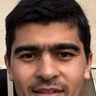
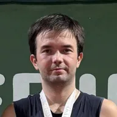
14 ноября · Меридиан · мужская одиночка NTRP до 4.0 · 12 игроков
14-noyabr · Meridian · erkaklar yakkaligi NTRP 4.0 gacha · 12 o‘yinchi
14 November · Meridian · men’s singles NTRP up to 4.0 · 12 players
- 1Фирдавс МухитдиновFirdavs MuxitdinovFirdavs Mukhitdinov
- 2Сарвар ИсабоевSarvar IsaboyevSarvar Isaboev
- 3Владимир Ивко · Абдулазиз КаримходжаевVladimir Ivko · Abdulaziz Karimxo‘jayevVladimir Ivko · Abdulaziz Karimkhodjaev
Финал 6:3. Третье место поделили полуфиналисты. Итоги — по PlayOn.
Final 6:3. Uchinchi o‘rinni yarim finalchilar bo‘lishdi. Natijalar PlayOn bo‘yicha.
Final 6–3. The losing semi-finalists share third place. Results from PlayOn.
Организатор не подтверждёнTashkilotchi tasdiqlanmaganOrganizer unconfirmed
8 ноября · Учкун · мужские пары · 12 пар
8-noyabr · Uchqun · erkaklar juftligi · 12 juft
8 November · Uchqun · men’s doubles · 12 pairs
- 1Мунимхон Мумтозхонов / Зафар АхмадхужаевMunimxon Mumtozxonov / Zafar Ahmadxo‘jayevMunimkhon Mumtozkhonov / Zafar Akhmadkhujaev
- 2Дилшод Хабибуллаев / Абдуллох ТошмирзаевDilshod Habibullayev / Abdulloh ToshmirzayevDilshod Khabibullaev / Abdulloh Toshmirzaev
- 3Тимур Авазметов / Михаил · Ахмад Усмонов / Абдукарим МирзаевTimur Avazmetov / Mixail · Ahmad Usmonov / Abdukarim MirzayevTimur Avazmetov / Mikhail · Ahmad Usmanov / Abdukarim Mirzaev
Итоги — по PlayOn. Третье место поделили две пары.
Natijalar PlayOn bo‘yicha. Uchinchi o‘rinni ikki juft bo‘lishdi.
Results from PlayOn. Two pairs shared third place.
Пост в группеGuruhdagi postGroup post
Тахир ХидоятовTohir HidoyatovTahir Khidoyatov
8 ноября · Меридиан · мужская одиночка NTRP 3.75–4.0 · 8 игроков
8-noyabr · Meridian · erkaklar yakkaligi NTRP 3.75–4.0 · 8 o‘yinchi
8 November · Meridian · men’s singles NTRP 3.75–4.0 · 8 players
- 1Тахир ХидоятовTohir HidoyatovTahir Khidoyatov
- 2Фирдавс МухитдиновFirdavs MuxitdinovFirdavs Mukhitdinov
- 3Саидазиз КаримовSaidaziz KarimovSaidaziz Karimov
Финал 6:1, матч за третье место 6:4 против Артёма Кащея. Итоги — по PlayOn.
Final 6:1, uchinchi o‘rin uchun o‘yin Artyom Kashcheyga qarshi 6:4. Natijalar PlayOn bo‘yicha.
Final 6–1; third-place match 6–4 against Artyom Kashchey. Results from PlayOn.
Бойцовский клубBoytsovskiy klubFight Club
7 ноября · Меридиан · командный турнир, 20 игроков
7-noyabr · Meridian · jamoaviy turnir, 20 o‘yinchi
7 November · Meridian · team event, 20 players
Europe 🔵 44 : 31 🔴 World
Европа: Данияр Башаров, Миразим Джураев, Зафар Ахмадхужаев, Бобур Хакназаров, Джамолиддинходжа Абдужаббаров, Имрон Ирматов, Искандар, Акмаль Файзуллаев, Бонур Латипов, Миромил Миркамилов. Больше всех побед в команде — у Зафара Ахмадхужаева: 5.
Yevropa: Doniyor Basharov, Mirazim Jo‘rayev, Zafar Ahmadxo‘jayev, Bobur Haqnazarov, Jamoliddinxo‘ja Abdujabborov, Imron Irmatov, Iskandar, Akmal Fayzullayev, Bonur Latipov, Miromil Mirkamilov. Jamoada eng ko‘p g‘alaba — Zafar Ahmadxo‘jayevda: 5.
Europe: Daniyar Basharov, Mirazim Juraev, Zafar Akhmadkhujaev, Bobur Khaknazarov, Jamoliddinkhoja Abdujabbarov, Imron Irmatov, Iskandar, Akmal Fayzullaev, Bonur Latipov, Miromil Mirkamilov. Most wins on the team — Zafar Akhmadkhujaev with 5.
Пост в группеGuruhdagi postGroup post
Бойцовский клубBoytsovskiy klubFight Club
31 октября · Меридиан · мужские пары · 12 пар
31-oktabr · Meridian · erkaklar juftligi · 12 juft
31 October · Meridian · men’s doubles · 12 pairs
- 1Тахир Хидоятов / Абдулазиз КаримходжаевTohir Hidoyatov / Abdulaziz Karimxo‘jayevTakhir Khidoyatov / Abdulaziz Karimkhodjaev
- 2Рахматжон Закиров / Алишер ХакимовRahmatjon Zokirov / Alisher HakimovRakhmatjon Zakirov / Alisher Khakimov
Итоги — по PlayOn: в группе победителей не объявляли. Третье место поделили две пары.
Natijalar PlayOn bo‘yicha: guruhda e’lon qilinmagan. Uchinchi o‘rinni ikki juft bo‘lishdi.
Results from PlayOn — the group didn’t announce them. Two pairs shared third place.
«6 геймов — всё-таки кайф» — из чата после турнира
«6 geymgacha o‘ynash — maza» — chatdan
“6 games — still a blast” — from the chat after the event
Пост в группеGuruhdagi postGroup post
Tennis plusTennis plusTennis plus
25 октября · корты МГУ · одиночка до 4.0
25-oktabr · MGU kortlari · yakkalik 4.0 gacha
25 October · MSU courts · singles up to 4.0
7 сетов за 7 часов
7 soatda 7 set
7 sets in 7 hours
- 1Саша ВаоSasha VaoSasha Vao
- 2Сарвар ИбрагимовSarvar IbragimovSarvar Ibragimov
- 3Махмуд ЮлдашевMakhmud YuldashevMakhmud Yuldashev
«Впервые в жизни сыграл 7 сетов за 7 часов» — победитель
«Hayotimda birinchi marta 7 soatda 7 set o‘ynadim» — g‘olib
“First time in my life I played 7 sets in 7 hours” — the winner
Пост в группеGuruhdagi postGroup post
Tennis plusTennis plusTennis plus
25 октября · женская одиночка
25-oktabr · ayollar yakkaligi
25 October · women’s singles
Весь пьедестал — одной школы
Butun shohsupa — bir maktabdan
One school took the whole podium
Все три призовых места заняли ученицы тренеров Tennis plus. Имена клуб не опубликовал.
Uchala sovrinli o‘rinni Tennis plus o‘quvchilari egalladi. Ismlar e’lon qilinmagan.
All three places went to students of Tennis plus coaches. The club didn’t publish names.
Пост в группеGuruhdagi postGroup post
Бойцовский клубBoytsovskiy klubFight Club
24 октября · Меридиан · одиночка до 3.75 · 16 игроков
24-oktabr · Meridian · yakkalik 3.75 gacha · 16 o‘yinchi
24 October · Meridian · singles up to 3.75 · 16 players
Гайрат — чемпион
G‘ayrat — chempion
Gayrat takes the title
- 1Гайрат РахматуллаевGayrat RakhmatullaevGayrat Rakhmatullaev
- 2Рахматжон ЗакировRakhmatzhon ZakirovRakhmatzhon Zakirov
Пост в группеGuruhdagi postGroup post
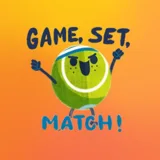
Tashkent Masters LeagueTashkent Masters LeagueTashkent Masters League
18 октября · Юнусабад · Masters Open Doubles
18-oktabr · Yunusobod · Masters Open Doubles
18 October · Yunusabad · Masters Open Doubles
Пары лиги Masters
Masters ligasi juftliklari
Masters League doubles
- 1Заррух Ниязов / Рахимбек ИбрахимовZarrukh Niyazov / Rakhimbek IbrakhimovZarrukh Niyazov / Rakhimbek Ibrakhimov
- 2Петро Захарченко / Аббос СадиковPetro Zakharchenko / Abbos SadikovPetro Zakharchenko / Abbos Sadikov
- 3Акмаль Арабджанов / Ахмаджон КосимиAkmal Arabdzhanov / Akhmadzhon KosimiAkmal Arabdzhanov / Akhmadzhon Kosimi
В турнире «одного очка» победил Святослав Ларионов — подачей с руки.
«Bir ochko» turnirida Svyatoslav Larionov g‘olib bo‘ldi.
The “one point” event was won by Svyatoslav Larionov — with an underarm serve.
Пост в группеGuruhdagi postGroup postСайт лигиLiga saytiLeague website
Tennis plusTennis plusTennis plus
18 октября · корты МГУ · микст до 4.0 · 12 пар
18-oktabr · MGU kortlari · mikst 4.0 gacha · 12 juft
18 October · MSU courts · mixed up to 4.0 · 12 pairs
Микст
Mikst
Mixed doubles
- 1Родион Ким / Александра ТкаченкоRodion Kim / Aleksandra TkachenkoRodion Kim / Aleksandra Tkachenko
- 2Н. Ходжаева / Р. БахтеевN. Khodzhaeva / R. BakhteevN. Khodzhaeva / R. Bakhteev
- 3Арева Амбарцумян / Саидсултон ГулямовAreva Ambartsumyan / Saidsulton GulyamovAreva Ambartsumyan / Saidsulton Gulyamov
Пост в группеGuruhdagi postGroup post
Tashkent Masters LeagueTashkent Masters LeagueTashkent Masters League
Новый сезон лиги: зимние парыLiganing yangi mavsumi: qishki juftliklarNew league season: Winter Doubles
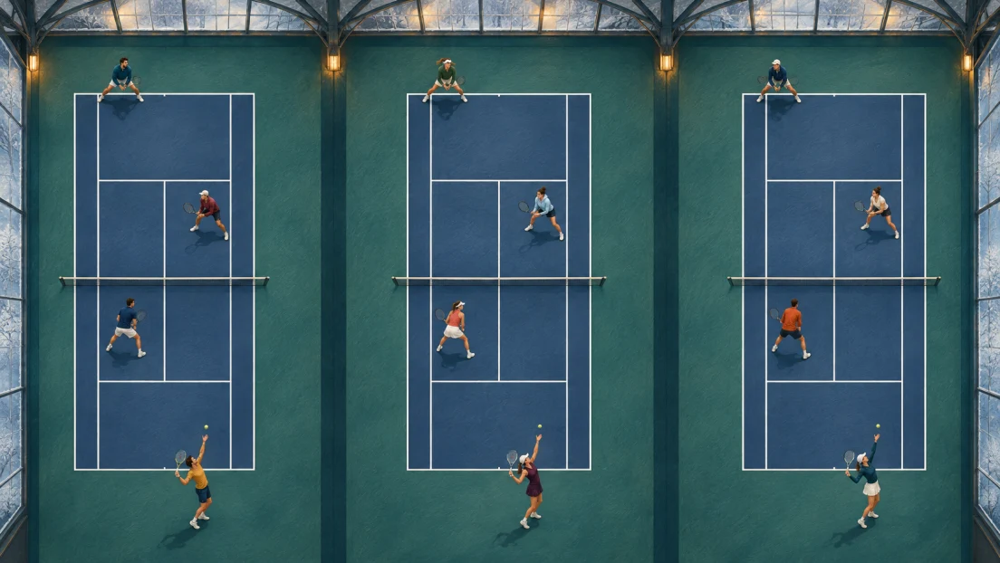
Tashkent Masters League, 14 ноября — 21 февраля. Мужские, женские пары и микст. Матч — один сет до 8, корт и время пары выбирают сами. Взнос 500 000 сум с пары, платить после распределения по дивизионам.
Tashkent Masters League, 14-noyabr — 21-fevral. Erkaklar, ayollar juftligi va mikst. O‘yin — 8 gacha bir set, kort va vaqtni juftliklar o‘zlari tanlaydi. Badal juftlikdan 500 000 so‘m, divizionlarga taqsimlangandan keyin to‘lanadi.
Tashkent Masters League, 14 November – 21 February. Men’s, women’s and mixed doubles. A match is one set to 8; pairs pick the court and time themselves. Entry 500,000 sum per pair, paid after the division draw.
Призы в каждом дивизионе: 1,4 млн, 1,2 млн и 1 млн сум на пару.
Har bir divizionda sovrinlar: juftlikka 1,4 mln, 1,2 mln va 1 mln so‘m.
Prizes per division: 1.4 million, 1.2 million and 1 million sum per pair.
Запись до 13 ноября · уже 7 парYozilish 13-noyabrgacha · 7 juft yozildiSign-up until 13 November · 7 pairs so farЗаписаться паройJuft bo‘lib yozilishSign up as a pairсверено с PlayOn 10 ноября в 15:40PlayOn bilan 10-noyabr 15:40 da tekshirildichecked on PlayOn on 10 November at 15:40
Группа лигиLiga guruhiLeague group
Tashkent Masters LeagueTashkent Masters LeagueTashkent Masters League
Новый сезон лиги: Doubles ShuffleLiganing yangi mavsumi: Doubles ShuffleNew league season: Doubles Shuffle
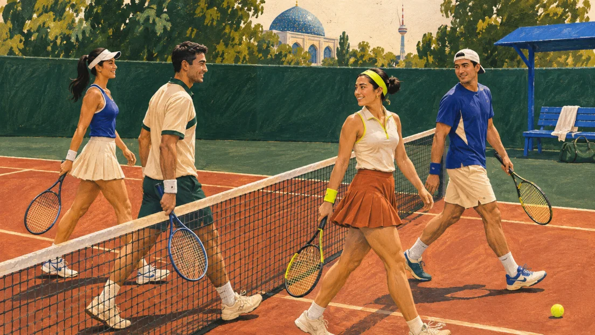
Заявка индивидуальная. В каждом матче — новый напарник. Взнос — 250 000 сум с игрока.
Ariza yakka tartibda beriladi. Har o‘yinda yangi sherik. Badal — har bir o‘yinchidan 250 000 so‘m.
Sign up individually and play with a new partner in each match. Entry fee: 250,000 sum per player.
Tashkent Masters League
Итоги сезона Uz OpenUz Open mavsumi yakunlariUz Open season results
217игроковo‘yinchiplayers
8дивизионовdiviziondivisions
37с призамиsovrinliprize-winners
17,7млн сум сертификатамиmln so‘m sertifikatmln sum in certificates
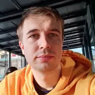
Anton RogozinM10 · 7 побед из 99 tadan 7 g‘alaba7 of 9 wonвысший дивизионoliy diviziontop division
Vladimir IvkoM15 · 6 побед из 66 tadan 6 g‘alaba6 of 6 won
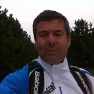
Bozorboy RustamovM20 · 6 побед из 77 tadan 6 g‘alaba6 of 7 won
Mirazim JuraevM30 · 4 победы из 55 tadan 4 g‘alaba4 of 5 won
Abdulaziz AbdazovM35 · 7 побед из 99 tadan 7 g‘alaba7 of 9 won
ASAbdulloh SaidahmedovM40 · 7 побед из 88 tadan 7 g‘alaba7 of 8 won
Abbos SotvoldievM45 · 6 побед из 77 tadan 6 g‘alaba6 of 7 won
Abubakir AkbarovM50 · 9 побед из 99 tadan 9 g‘alaba9 of 9 won
Призёры получили сертификаты Amazing Store на 17,7 млн сум, они действуют до 1 февраля 2027.
Sovrindorlar 17,7 mln so‘mlik Amazing Store sertifikatlarini oldi, ular 2027-yil 1-fevralgacha amal qiladi.
Prize-winners got Amazing Store certificates worth 17.7M sum, valid until 1 February 2027.
Пост в группеGuruhdagi postGroup postВсе результаты и переходыBarcha natijalarAll results and promotionsГруппа лигиLiga guruhiLeague group